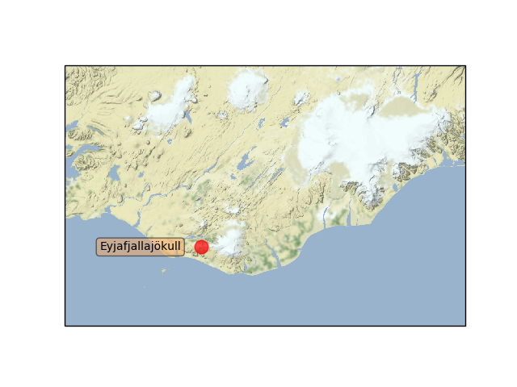

Note
Click here to download the full example code
Map tile acquisition¶
Demonstrates cartopy’s ability to draw map tiles which are downloaded on demand from the Stamen tile server. Internally these tiles are then combined into a single image and displayed in the cartopy GeoAxes.
import matplotlib.pyplot as plt
from matplotlib.transforms import offset_copy
import cartopy.crs as ccrs
import cartopy.io.img_tiles as cimgt
def main():
# Create a Stamen terrain background instance.
stamen_terrain = cimgt.Stamen('terrain-background')
fig = plt.figure()
# Create a GeoAxes in the tile's projection.
ax = fig.add_subplot(1, 1, 1, projection=stamen_terrain.crs)
# Limit the extent of the map to a small longitude/latitude range.
ax.set_extent([-22, -15, 63, 65], crs=ccrs.Geodetic())
# Add the Stamen data at zoom level 8.
ax.add_image(stamen_terrain, 8)
# Add a marker for the Eyjafjallajökull volcano.
ax.plot(-19.613333, 63.62, marker='o', color='red', markersize=12,
alpha=0.7, transform=ccrs.Geodetic())
# Use the cartopy interface to create a matplotlib transform object
# for the Geodetic coordinate system. We will use this along with
# matplotlib's offset_copy function to define a coordinate system which
# translates the text by 25 pixels to the left.
geodetic_transform = ccrs.Geodetic()._as_mpl_transform(ax)
text_transform = offset_copy(geodetic_transform, units='dots', x=-25)
# Add text 25 pixels to the left of the volcano.
ax.text(-19.613333, 63.62, u'Eyjafjallajökull',
verticalalignment='center', horizontalalignment='right',
transform=text_transform,
bbox=dict(facecolor='sandybrown', alpha=0.5, boxstyle='round'))
plt.show()
if __name__ == '__main__':
main()
Total running time of the script: ( 0 minutes 0.015 seconds)